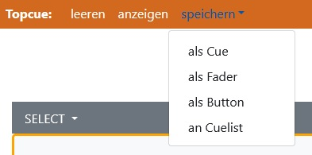

Grundlagen¶
DMX¶
Über das DMX-Protokoll können alle möglichen unterschiedlichen Geräte bedient werden, zum Beispiel Dimmer, LED-Scheinwerfer, Nebelmaschinen etc. Diese Geräte haben ein oder mehrere Attribute, wie Intensität, Farben, Position oder Geschwindigkeit. Ein Gerät hat eine Startadresse, das ist eine Zahl zwischen 1 und 512. So ein Zahlenbereich von 1-512 wird als Universum bezeichnet, was natürlich verglichen mit dem realen Universum reichlich übertrieben ist. Daher ist es mit dieser Lichttechniker-Definition von Universum möglich, dass sich in einem Raum mehrere Universen befinden.
Hardware¶
Geräte-Eigenschaften werden mit Attributen beschrieben. Diese Beschreibung nennt man Head-Definition. In ClubDMX werden Head-Definitionen wie alle anderen Daten in CSV-Tabellen gespeichert.
Ein Gerät im Universum könnte zum Beispiel ein LED-Scheinwerfer mit den Farben rot, grün und blau sein. Diese Farben sind die Attribute, die unabhängig voneinander in der Intensität verändert werden können. In einer simplen Lichtsteuerung erhält jede Farbe einen Regler zugewiesen, mit dem dann die Intensität eingestellt wird. Wenn ich jetzt aus den drei Farben einen schönen Farbton gemischt habe, dann wäre es wünschenswert, wenn ich diesen Farbton nun in der Intensität verändern könnte. Das ist mit drei Reglern etwas schwierig, da ich ja die drei Regler im richtigen Verhältnis zueinander auf oder ab schieben soll.
Und hier kommt ein Konzept der Lichttechnik ins Spiel, das sich in den letzten Jahren verbreitet hat, nämlich der virtuelle Dimmer. Ein virtueller Dimmer ist ein Faktor (zwischen 0 und 1), mit dem jeder Farbwert des LED-Scheinwerfers multipliziert wird. In der Lichttechnik ist der virtuelle Dimmer nun ebenso ein Regler, der zusätzlich zu den Farben des LED-Scheinwerfers zur Verfügung steht.
Räume und Config¶
In ClubDMX werden in einem Raum alle Daten der Datenbank zusammengefasst, die für die Steuerung notwendig sind. Das sind unter anderem Konfigurationen, Patches, Head-Daten, Cues, Stages, Fadertabellen und Buttontabellen. Durch diese Struktur ist es einfach, alle zu einem Projekt gehörenden Daten zu sichern und auch, ClubDMX in verschiedenen Anwendungsbereichen zu betreiben.
Die Aufgabe der Config ist es, für einen Raum die Anforderungen an eine spezielle Aufgabe anzupassen, zum Beispiel für eine Aufführung oder eine Personengruppe, die einen Veranstaltungsort nützt.
Besipiele dazu wären, wenn man für einen Club verschiedene Configs für Standard- und Session-Bespielung oder für einen Probenraum verschiedene Configs für die jeweiligen Nutzer anlegt.
Bearbeitungsmodus¶
Wie aus anderen Tabellenkalkulationen bekannt, werden zwei unterschiedliche Editiermethoden benötigt: Zellenweises Editieren und Zeilenoprerationen.
In ClubDMX ist es genauso, daher wird der Begriff des Bearbeitungsmodus eingeführt. Das Editieren von Text in Zellen geschieht im Modus EDIT, Zeilenoperationen wie Ausschneiden, Kopieren und Einfügen geschieht im Modus SELECT.
Auf der Stage-Seite hat der Modus SELECT eine weitere Aufgabe: In diesem Modus werden Symbole selektiert, die dann in der Größe verändert und verschoben werden können. Für die selektierten Heads werden Attribut-Slider angezeigt, mit denen die Attribute verändert werden können.
HTP und LTP¶
Zu Zeiten, als in der Theaterbeleuchtung außer Dimmern bestenfalls noch ansteuerbare Schalter zu finden waren, gab es eine klare Regelung: Wenn ein Dimmer von einem Regler in einem bestimmten Wert angefordert wurde und von einem anderen Regler in einem anderen Wert, so galt der höhere Wert.
In Zeiten von Moving Lights, Farbwechslern und Equipment, das andere Parameter als Intensität kennt, ist diese einfache Regel nicht mehr ausreichend.
Ein einfaches Beispiel: Wird die Position eines Moving Light mit zwei Werten für die x- und die y-Achse beschrieben, so definiert zum Beispiel Szene 1 die Position als 50% für x und 50% für y. Wenn nun in einer nachfolgenden Szene 10% für x und 90% für y angefordert wird, dann eräbe sich nach der „höchsten-Wert-Regel“ als Kombination der beiden Szenen ein x-Wert von 50% und ein y-Wert von 90%. Das entspricht dann keiner der beiden Szenen und ist als Ergebnis völlig unbrauchbar.
Daher braucht es für solche Attribute wie Position eine andere Regel. Diese ist ebenso simpel wie die Regel „der höchste Wert gilt“, die Regel lautet: Der letzte Wert gilt.
In der englischsprachigen Welt gibt es natürlich auch Überlegungen diesbezüglich, und als Resultat davon haben sich bei uns auch die englischen Abkürzungen für diese Regeln zur Beschreibung durchgesetzt: HTP und LTP.
HTP bedeutet highest takes precedence, LTP steht für latest takes precedence.
Als Zusammenfassung dieser beiden Regeln kann für die zeitgemäße Lichtsteuerung gesagt werden, dass die Intensität nach der HTP-Regel und alle anderen Attribute nach der LTP-Regel gesteuert werden.
Die Ausnahme von dieser Aussage bilden die RGB-Farben eines LED-Scheinwerfers, bei dem die Farben rot, grün und blau entweder als eigenständige Intensitäten und somit gemäß HTP-Regel oder als kombinierter Farbwert und damit gemäß LTP-Regel behandelt werden. Wie RGB-Werte gesteuert werden, hängt von den Präferenzen des Lichttechnikers ab und die beste Methode ist von der jeweiligen Situation abhängig.
Topcue¶
Hinter dem Begriff Topcue steht eine simple Idee: Das ist der Speicher der Werte, die neu programmiert oder verändert wurden. Diese Werte sollen aktuell gültig sein und es soll auch eine Speicherung in einem neuen Cue oder eine Änderung eines vorhandenen Cues ermöglichen.
Der Topcue ist eine Lichtszene (Cue), die aber nicht gemäß HTP-Regel behandelt wird. Für diese Szene gilt, dass jeder hier enthaltene Wert Vorrang (= Top-Priorität) hat. Somit kann ein aus der Summe der aktiven Szenen errechneter Wert außer Kraft und durch einen anderen Wert ersetzt werden.
Es gibt verschiedene Möglichkeiten, damit Werte in den Topcue gelangen:
Attribute werden im Single-Modus verändert.
In der Stage werden Geräte ausgewählt und es werden Attribute verändert.
Ein Cue wird mit dem Topcue-Button in den Topcue aufgenommen.
Sind Werte im Topcue enthalten, dann erscheint unterhalb der Standard-Navigationsleiste eine zweite Navigationsleiste mit den Optionen leeren, anzeigen und speichern.
Mit leeren wird der Topcue gelöscht und es gelten wieder die errechneten Werte für alle Geräte.
Mit anzeigen wird der Inhalt des Topcue in einer Liste dargestellt.
Der Button speichern eröffnet weitere Möglichkeiten: Die Werte des Topcue können als neuer Cue, als Fader oder als Button abgespeichert werden.
